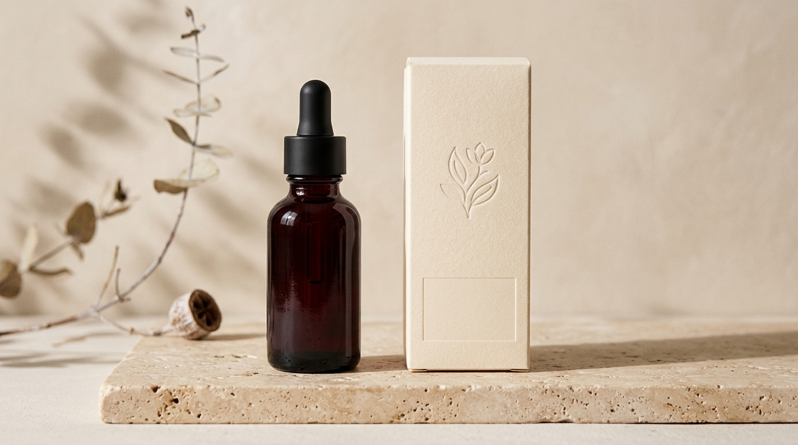
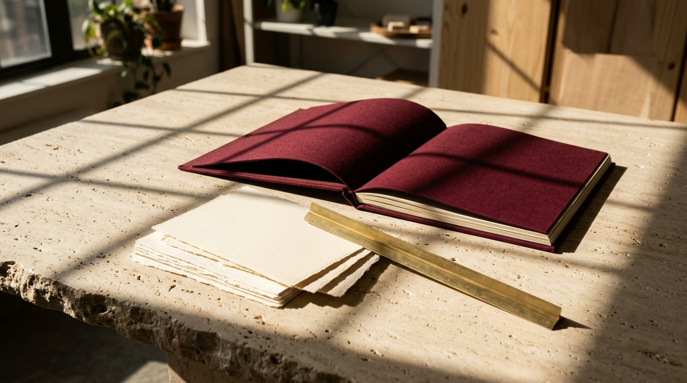
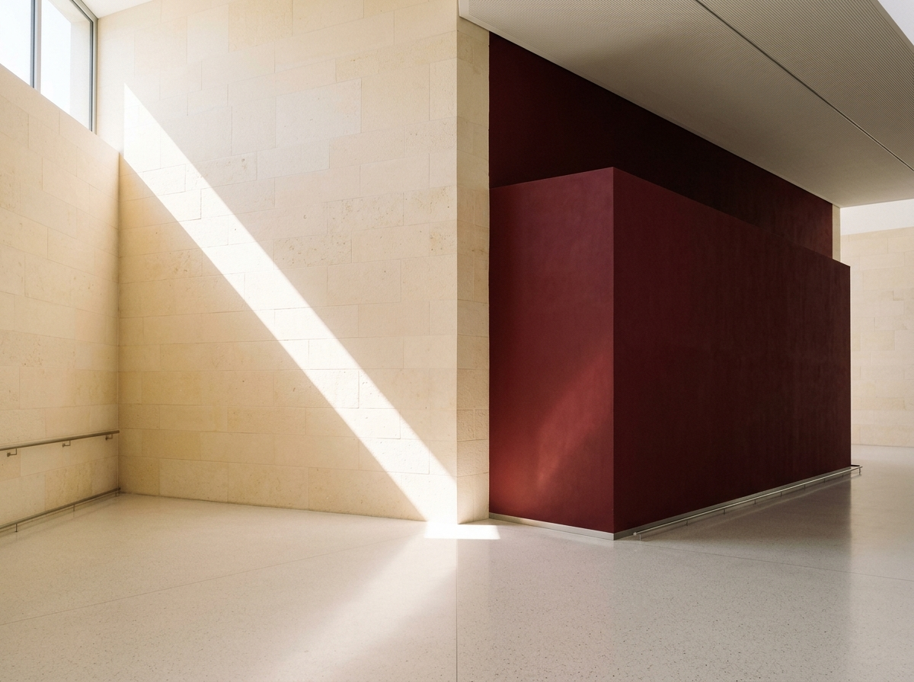
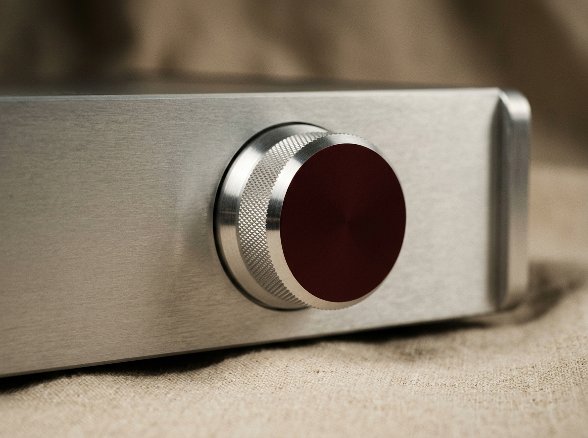
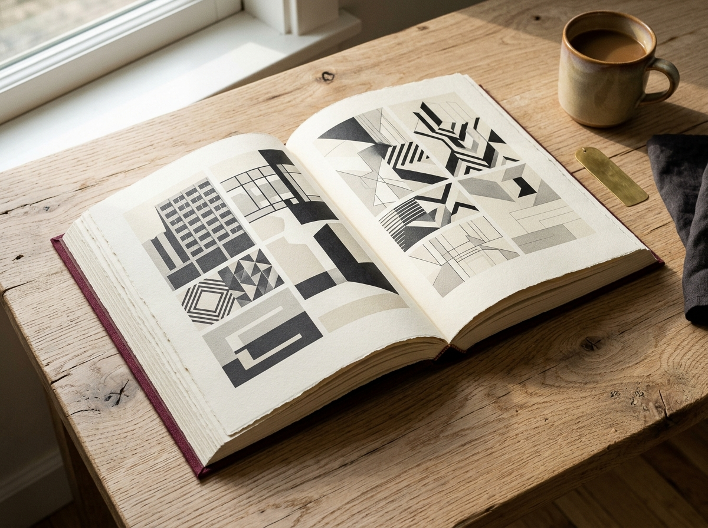
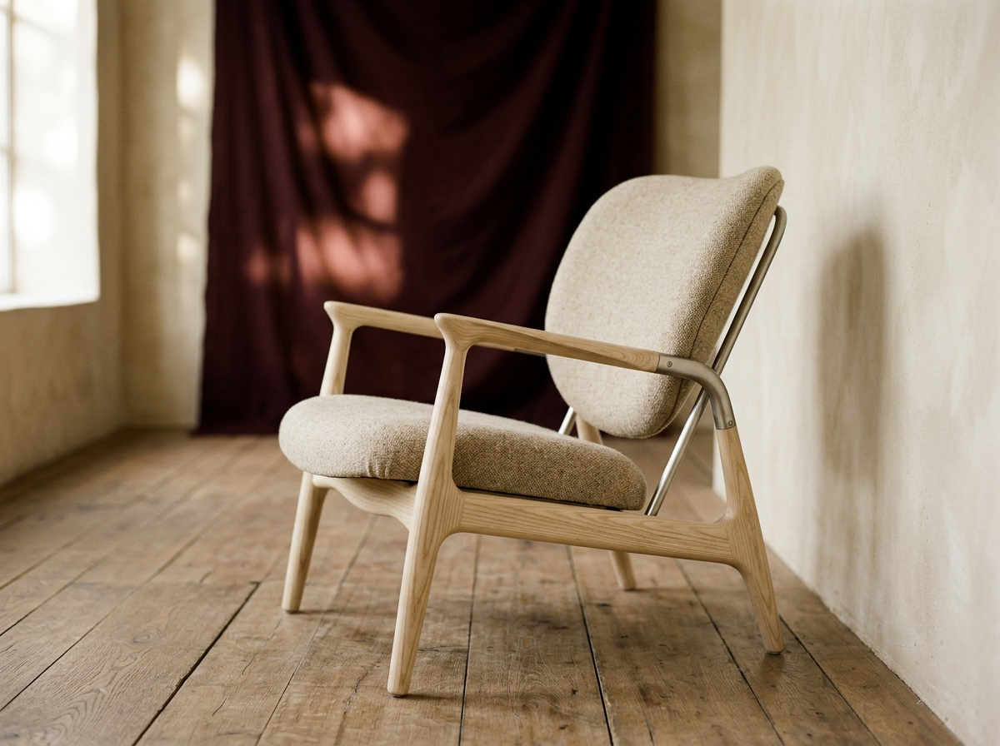

Packaging system, custom wordmark, and editorial commerce flagship for a Paris botanical formulation house.
PABGOS! STUDIO is an independent design practice partnering with founders, fashion houses, and cultural institutions on identity systems, bespoke websites, and motion.


Packaging system, custom wordmark, and editorial commerce flagship for a Paris botanical formulation house.

Digital exhibition index and spatial archive built for a contemporary architecture foundation in Zürich.

Visual identity, hardware packaging, and interactive product launch for an independent Berlin acoustic studio.

Typographic system and print-to-web reading room for an independent art book publisher in Geneva.

Digital showroom and material library for a Copenhagen furniture atelier working in solid ash and brushed steel.
Full credentials deck and private client work available upon request.
Request CredentialsEvery commission is led directly by our founding partners—bridging strategic clarity, editorial typography, and front-end engineering without handoff dilution.
Positioning, verbal identity, and art direction that give emerging and established companies a distinct point of view.
Bespoke wordmarks, typographic hierarchies, packaging, and printed matter designed to hold up at any scale.
Modular, client-maintainable websites built with clean architecture, responsive precision, and fast load times.
Restrained scroll choreography and tactile interface feedback that clarify hierarchy and reward attention.
“Good digital work should carry the quiet weight of heavy printed paper—nothing decorative, nothing accidental.”
Across cultural institutions, independent consumer brands, and venture-backed software.
We limit annual engagements so every project receives direct partner focus from day one.
The directors you meet on the first call are the people designing and building your work.
We are booking select identity and web engagements for Q2 and Q3. Share your email and scope—our partners respond within one business day.